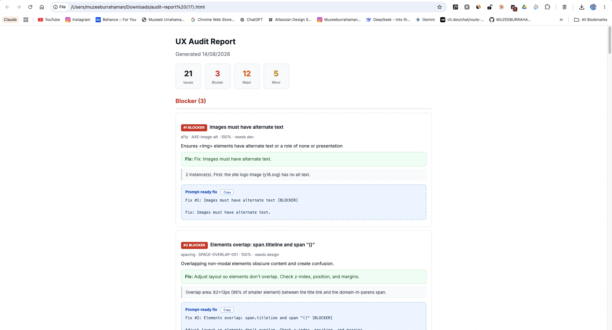
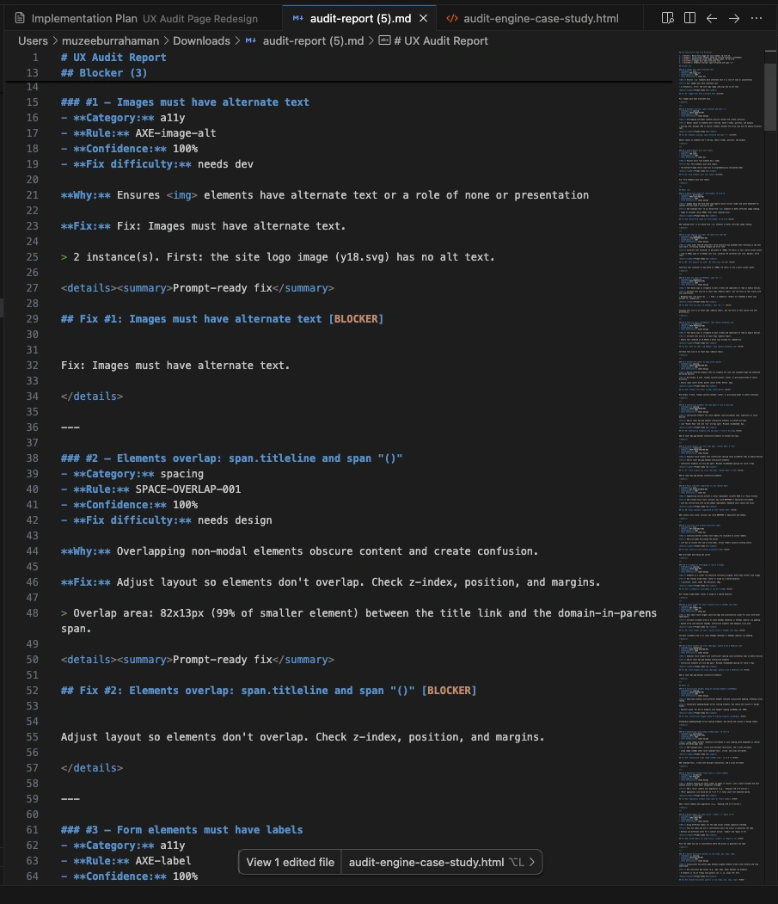

Design QA took me a day per release. So I built an engine that takes minutes.
A tool that opens a web app the way a person would, clicks through its menus and pop-ups, and lists each design problem it finds with the exact code fix. It costs about $0.30 a screen.
- Role
- Solo product designer & builder
- Duration
- Jun – Jul 2026 · Omnis AI
- Owned
- Problem, design, architecture, ~27k lines of TypeScript
- Skills
- Design QA · Accessibility · AI pipeline design · Full-stack TypeScript

As the only designer across five products, I checked every release by hand. Design bugs hid behind dropdowns, errors and empty states that nobody had time to open.
Designed and built an engine that signs in, clicks through every state and checks it against 229 rules. A finding that can't point to a real element is thrown out.
A working prototype: about $0.30 and 3 minutes a screen, 90%+ of findings tied to an element, 187 tests. Parked after a restructuring; not run at scale.
01Overview
I built the QA teammate I didn't have.
I was the only designer across five legal-tech products at Omnis AI. Before each release I checked every screen by hand, and it took hours. So I built a tool that does the checking, and I keep the final say.
- 01
Give it a link
And a test login for the staging app.
- 02
It clicks through
Screens, menus, dialogs and pop-ups, the way a person would.
- 03
It checks each state
Against 229 fixed rules, then an AI pass for layout.
- 04
You get a report
Every problem tied to an element, with the fix.
Ready to paste
02The problem
Design bugs hide behind clicks.
A screen can pass review when it first loads. The problems show up after someone opens a dropdown, submits a form with an error, or lands on an empty page.
Nobody had time to click through all of those states before each release, so those bugs reached real users.

The goalCheck every state of every screen, fast enough to run before each release, and accurate enough that engineers would trust it.
03Solution
Three parts: a clicker, a checker, and a reporter.
| Part | What it does | What you get |
|---|---|---|
| Crawler | Logs in and clicks through screens, menus, dialogs, and tabs | A record of each state it reached |
| Checker | Runs 229 fixed rules (contrast, design tokens, accessibility), then an AI pass for layout | Problems, each tied to a real element on the page |
| Reporter | Sorts problems into a view for each role | A report with the exact code fix for each problem |
Who it's for: product designers, frontend engineers, QA, content designers, and the managers who sign off on releases.
04Background
One designer, five products, no QA team.
Who this was built for: me, first
Owned five products
Each one shipped on its own schedule.
Checked each release by hand
Screenshots, red boxes in Figma, then tickets.
Repeated it after each fix
A fix meant checking the whole screen again.
A typical manual check meant taking screenshots, drawing red boxes in Figma, listing the design tokens, and writing tickets. When engineers fixed something, I checked everything again. Design QA became the thing holding releases back.

05Design process
Two versions. The first one made things up.
Each version tested the same question: can a tool find design problems that engineers trust enough to fix?
V1Reading screenshots with AI

The tool took screenshots and asked an AI vision model to list problems, each with a location, a severity, and a suggested fix.
On a dashboard I knew well, it reported low contrast on "the secondary button beside the search field." That button didn't exist. The AI had guessed from what dashboards usually look like.
If one finding is made up, you have to double-check all of them, and that cancels out the time saved.
FinalChecking the real page, with proof

The tool works inside a live browser. It runs 229 fixed rules first and uses AI only for layout questions. Any problem that can't point to a real element on the page gets thrown out.
Over 90% of findings point to an exact element in the page code, so an engineer can find each problem in one click.
A short list people trust beats a long list they have to verify.
- 01
A problem is spotted
By one of the 229 rules, or by the AI layout pass.
- 02
Proof check
Does it point to a real element on the page?
- 03
Yes: it's reported
With the selector, the measured values and the fix.
Kept - 04
No: it's dropped
Before anyone has to read it.
Never reaches the report
06Outcome
What changed between the manual way and the tool.
Per screen, in about 3 minutes. Measured compute and API cost. Manual reviews took 2 to 3 hours per product.
Problems across 22 states: a 4-screen check of CaseNotes, in about 11 minutes, for about $1.20.
Of findings tied to a real element, each linking to the exact spot in the page code.

- 01
Open each screen
- 02
Screenshot it
And mark problems up in Figma.
Hours per product - 03
Click states by hand
Menus, errors and empty pages, when there was time.
States missed - 04
Answer questions
"Which element?" from engineers, one by one.
Back-and-forth - 05
Start over
After each fix, the whole screen again.
No memory
- 01
Run one command
- 02
Each state opened
The tool clicks through dialogs, drawers and dropdowns.
Nothing skipped - 03
Each problem anchored
To a real element, with its selector.
No guessing - 04
Engineers paste the fix
Merged, not discussed
AutoDoc: 87 findings by severity
- Blocker 4
- Major 26
- Minor 42
- Nit 12
- Praise 3
07Design decisions
Proof first, clicks before judging, fixes ready to paste.
Proof before opinion
Fixed rules handle what can be measured: contrast, accessibility attributes, and design tokens. AI handles judgment calls, and only when it can point to the element.
Click before judging
The tool opens each dialog, dropdown, drawer, and tab before it reviews a screen.

Every problem comes with its fix
Each card shows a severity, the rule it broke, a plain-English title, the design principle behind it, a copy-paste CSS fix, and a confidence score.


Decision 4Each role sees its own list
One run, six readers, each filtered to the work they can act on.
| Reader | What they see |
|---|---|
| Product designer | Problems by severity and token mismatches. Rejecting a false alarm stops it coming back. |
| Frontend developer | Blockers with the exact element, its styles, and the fix. |
| QA | A log of every dialog, drawer, and dropdown the tool opened. |
| Content designer | A separate list of confusing labels and copy. |
| Engineering manager | A dashboard across all products. |
| Leadership | A record of problems fixed over time. |


08Under the hood
Two codebases, one TypeScript stack.
The engine (ux-audit-mcp) captures and checks pages. The service (ux-audit-service) adds the multi-product dashboard and automation.

| Layer | Technology |
|---|---|
| Runtime | Node + TypeScript, Model Context Protocol (MCP) SDK |
| Capture | Playwright (session management, full-page screenshots, DOM inventory, state crawler) |
| Accessibility | @axe-core/playwright (live axe engine execution per page) |
| AI vision | OpenAI-compatible SDK with Gemini Flash and OpenRouter fallbacks |
| Image | Sharp (annotation rendering), tesseract.js (OCR coordinate snapping), pixelmatch (diffing) |
| Service | Next.js 16, React 19, Tailwind 4, Prisma 7 + Postgres, BullMQ + Redis, GitHub Actions, Docker |
Reports open anywhere
Each audit saves as a standalone HTML page and a Markdown file ready for GitHub or Linear.


09Agent skill & bundle
Download the UX Audit Assistant skill.
I packaged the heuristics engine, WCAG 2.2 accessibility rules, DOM state exploration prompts, and report Markdown templates into a drop-in skill for Claude and other AI agents. Download it to run automated design reviews in your own workflow.
UX Audit Assistant agent skill
Drop-in skill for Claude Code, Cursor, and custom agent loops. Automates design QA and generates grounded finding cards from real DOM states.
- 229+ deterministic UX and accessibility heuristics
- DOM state explorer prompts and rules
- Self-contained HTML and Markdown report templates
- Copy-paste fix generator for developers
Includes ai-ux-audit.skill, SKILL.md and README.md. Works with Claude Code, Cursor, Windsurf, and custom agent workflows.
10Looking back
What building it taught me.
Trust comes before speed
A tool that reports 50 problems with 15 made up costs more time than checking by hand.
Real checks need clicks
Looking only at first loads misses overflowing dropdowns, error messages, and empty pages.
Engineers fix what they can paste
A selector and a code fix get merged. A vague comment gets skipped.
If I pick it back up
- Remember a starting point for each product, so later runs flag only new problems.
- Run on every staging deploy through GitHub Actions and flag new blockers on pull requests.
- Re-check after a fix is merged to confirm it worked.
- Send verified notes back into Figma files through the Figma API.
11Questions
Questions people ask.
Who approved giving a product designer live credentials to staging environments?
No new grant was needed: it reused the same staging access I already held as the product designer auditing those apps by hand. The engine logs in with my credentials, scoped to the same environments I already reviewed, and never touched production or anyone else's access.
Are you a designer or an engineer?
Product design is my core foundation: research, UX architecture, interaction design, and design systems. I also write production TypeScript to ship working prototypes and developer tooling end to end.
What was your contribution compared to engineering?
I conceived, designed, and built the entire engine myself, covering the MCP architecture, Playwright crawlers, axe integrations, and Next.js reporting dashboard.
How do you prevent model hallucinations?
Deterministic checks evaluate objective rules (contrast math, ARIA attributes). AI findings are rejected unless they map to a valid DOM node and pass structured false-positive validation.
How does this differ from axe-core or Lighthouse?
Lighthouse and axe evaluate a single static URL. This engine signs in, crawls interactive application states, pairs axe-core with layout heuristics, and exports diff-ready CSS token patches.
How did you measure audit effectiveness?
By tracking verified findings per screen and measuring false-positive rates against real product staging environments.
Can this deploy to production CI pipelines?
Not yet. Running audits on every staging deploy and flagging new blockers on pull requests is the next step listed above.
 I replaced OmnisProof's disjointed modal wizard and manual field placement with a persistent canvas and reviewable AI detection.
I replaced OmnisProof's disjointed modal wizard and manual field placement with a persistent canvas and reviewable AI detection.
 I designed an AI transcription and synthesis workspace that anchors client conversations to litigation discovery files.
I designed an AI transcription and synthesis workspace that anchors client conversations to litigation discovery files.
 I split a merged intake-and-matter form into two linked systems: an AI-assisted path and a manual path into each new matter.
I split a merged intake-and-matter form into two linked systems: an AI-assisted path and a manual path into each new matter.